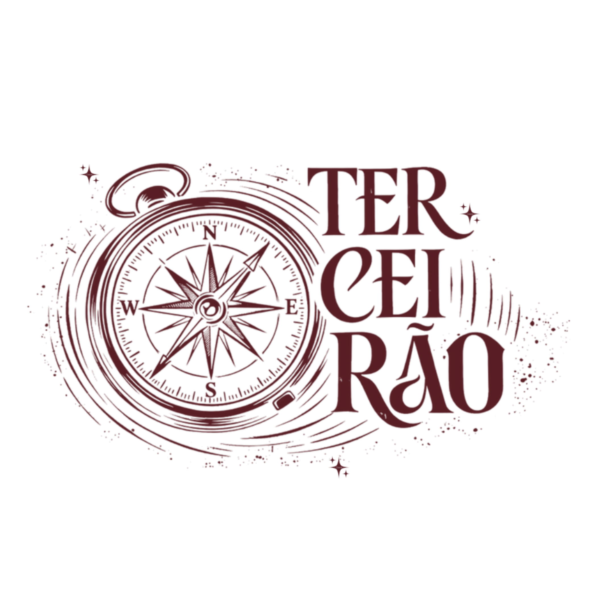
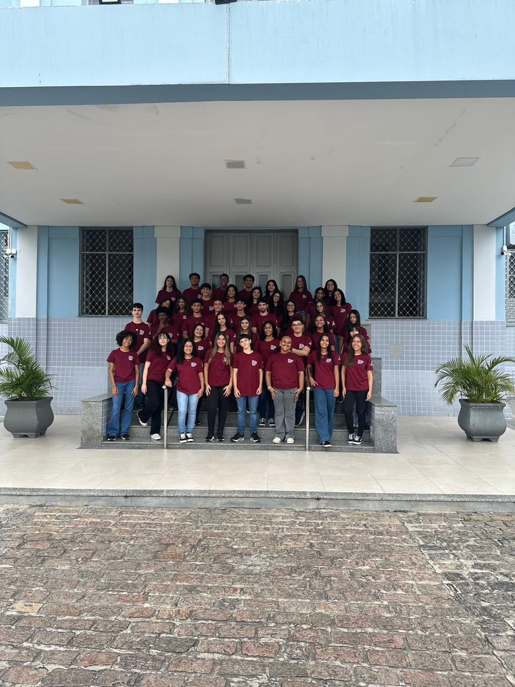

Projeto Chapada

Sobre o Projeto
A Chapada Diamantina vai muito além de suas paisagens impressionantes. Ela reúne histórias, culturas, riquezas naturais, biodiversidade e diferentes formas de relação entre sociedade e natureza.
Por meio de uma experiência de turismo pedagógico interdisciplinar, os estudantes da 3ª série do Ensino Médio do Colégio Padre Ovídio transformaram a viagem de campo em uma oportunidade de observar, pesquisar, questionar e produzir conhecimento. Em diferentes espaços da região, como Mucugê, Projeto Sempre Viva, Pratinha, Morro do Pai Inácio e Poço Azul, cada paisagem tornou-se uma sala de aula.
O principal objetivo do projeto é aproximar os conhecimentos construídos em sala de aula da realidade, permitindo que os estudantes relacionem teoria e prática por meio da observação direta do território. A experiência também busca desenvolver a capacidade de pesquisa, análise, registro, comunicação e reflexão crítica, além de estimular o protagonismo estudantil e o trabalho colaborativo.
Diante dessa experiência, os estudantes produziram um vídeo-documentário, reunindo pesquisas, fotografias, filmagens, dados coletados em campo, produções textuais e conhecimentos científicos.
O resultado é um convite para enxergar a Chapada por diferentes perspectivas e compreender que natureza, ciência, história, cultura e sociedade estão profundamente conectadas.
Quer conhecer nosso projeto? Clique aqui em "Mucugê"!